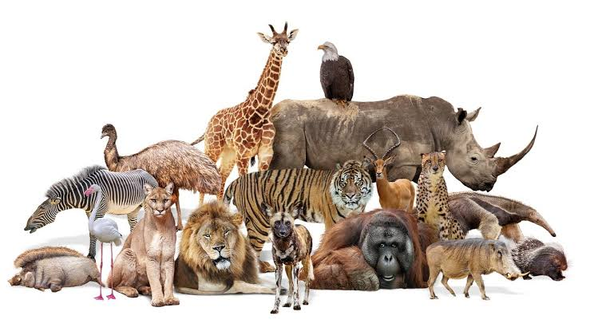

Zoology
Copyrights to Live Science
Is an ever-evolving branch of Biology dealing with the members of the
Kingdom Animalia. It continually adapts and incorporates new technologies
and research techniques to unravel the mysteries of the animal world, hence addresssing
pressing ecological and environmental challenges and fostering a deeper appreciation
for the incredible diversity of life in our planet.
*
*
*
*
*
*
The branch not only deals with the identificaton of animal life but also encompasses
morphological, anatomical, physiological, biochemical, evolutinary biology, ecological
distribution, behavioral patterns, genetics, molecular biology, population genetics,
taxonomy, and classification of animals.
*
*
*
*
*
*
*Animal physiology (deals with the physiological processes in animals)
*Animal histology (concerned with study of animal tissues)
*Animal embryology (focused mainly on studying animal embryos)
*Taxonomy (including identification and classification of animals)
*Zoogeography (concerned mainly with the study of animals and their habitat)
*Comparative anatomy (deals with the similarities and differences
in the anatomy of different species)
*Ethlogy (concerned with the study of animal behavior)